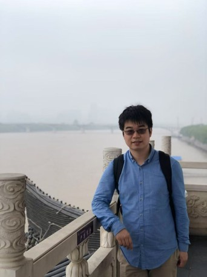

Group leader

Dr. Xingcheng LU 陸興成
Assistant Professor
Department of Geography and Resource Management, The Chinese University of Hong Kong
Ph.D. Physics, HKUST
M.Sc., Northwestern University
B.Sc., B.S. Physics, SYSU
Email: xclu@cuhk.edu.hk
Current members

Chaoran ZHANG 張朝冉
PhD student
Master & B.E., Wuhan University
Email: chaoranz@link.cuhk.edu.hk

Yuxiao JIANG 蔣雨瀟
PhD student
Master & B.E., Wuhan University
Email: yuxiaojiang@link.cuhk.edu.hk

Yixin Luo 羅奕昕
MPhil student
B.Sc., Nanjing University of Information Science and Technology
Email: yxluo@link.cuhk.edu.hk
Group Alumni
Dehao Yuan
Undergraduate Student, 2018-2021
Now: University of Maryland
Haochen Sun
Undergraduate Student, 2019-2022
University of Waterloo
Wanying Chen
PhD, 2019-2025
Now: University of California, Los Angeles
Opportunity
Currently I am recruiting postgraduate students and research assistants. Candidates with the backgrounds of environmental science, atmospheric science, computer science and remote sensing are welcome to apply. If you are interested to work with me, please feel free to send me your CV via email.